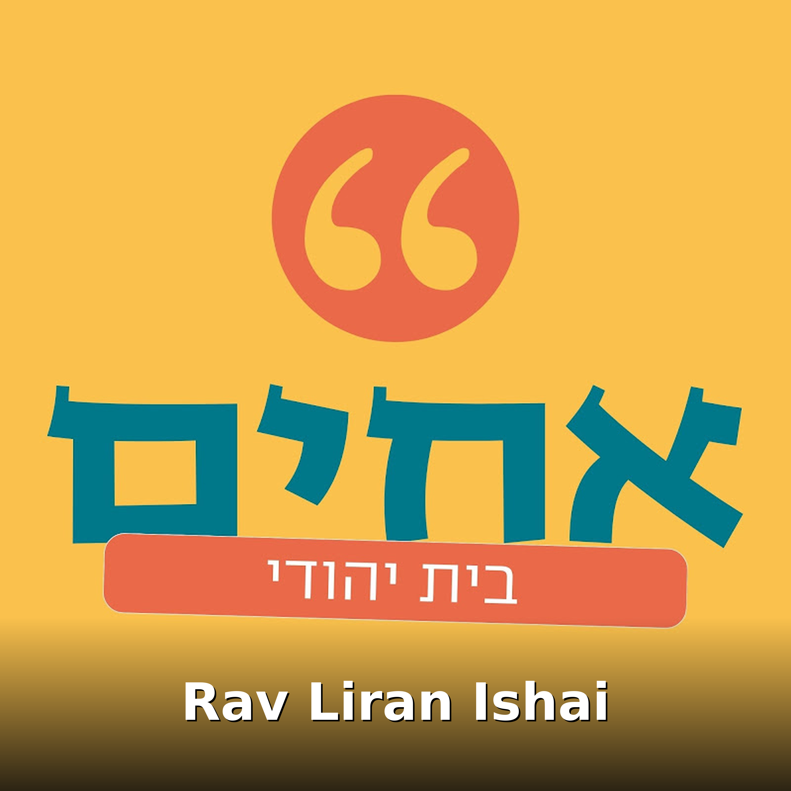

Rav Liran Ishai
Tous les épisodes

קונים מצות לפסח? שיעור מיוחד על ההבדלים בין סוגי המצות מאת מורנו הגאון הגדול הרב לירן ישי שליט"א
מסתפקים בין מצות יד מצות מכונה? רוצים לדעת מה זה מצות רש"י? רוצים לדעת ממתי המצה 'שמורה'? מורנו הגאון הגדול הרב לירן ישי שליט"א בשיעור ...

מחצית השקל: האם אפשר לשנות מייעוד של צדקה? צפו בשיעורו של מורנו הגאון הגדול הרב לירן ישי שליט"א
בשיעורו השבועי המרתק של מורנו הגאון הגדול הרב לירן ישי שליט"א מתייחס הרב לענייני דיומא, בהלכה למעשה. אל תשכחו להירשם לערוץ וללחוץ ...

מתחילים מסכת מנחות? אל תפספסו את ההקדמה של הרב רועי כהן (כולל המחשות!)
מתחילים את מסכת מנחות ברגל ימין! הצטרפו להסבר מרתק וממחיש על עבודת הקורבנות והמנחות עם הרב רועי כהן שליט"א. בשיעור זה, הרב לא רק ...

האם צריך להתפלל לשלומו של השלטון האיראני? צפו בשיעורו של מורנו הגאון הגדול הרב לירן ישי שליט"א
בשיעורו השבועי המרתק של מורנו הגאון הגדול הרב לירן ישי שליט"א מתייחס הרב לאירועים הבוערים באיראן ומחבר אותם באופן מפתיע לימי השובבי"ם ...

החסד הנסתר בחורבן הבית | מורנו הגאון הגדול הרב לירן ישי שליט"א על עשרה בטבת
בעשרה בטבת, יום תחילת המצור על ירושלים – חושף מורנו הגאון הגדול הרב לירן ישי שליט"א נקודת עומק מפתיעה: גם בתוך החורבן – טמון חסד גדול ...

ברקע האנטישמיות בעולם | השגרירים התכנסו להדלקת נרות חגיגית במעמד מורנו הגאון הגדול הרב לירן ישי
אירוע מיוחד של מועדון השגרירים בישראל שהופק בשיתוף פעולה עם בית הכנסת הגדול "היכל מרדכי" בעיר הרצליה, הפגיש תחת קורת גג אחת את ...

אור לגויים | השגרירים הנמצאים בהרצליה מדליקים נרות חנוכה עם מורנו הגאון הגדול הרב לירן ישי
רגעים מרגשים של אחדות בבית הכנסת הגדול "היכל מרדכי" בהרצליה. קבוצת שגרירים ודיפלומטים עם בני משפחותיהם, הנמצאים בעיר הרצליה, הצטרפו ...

שהחיינו | הסגולה בחג החנוכה שתגרום לכם להאריך ימים: מורנו הגאון הגדול הרב לירן ישיש שליט"א
מורנו הגאון הגדול הרב לירן ישי שליט"א מגלה את עומק עניין ברכת 'שהחיינו' בחנוכה, ואת הסגולה הנפלאה הטמונה בה – סגולה שמקורה בדברי חז"ל ...

“נר של חנוכה” | הסגולה העצומה שבברכת ההדלקה: מורנו הגאון הגדול הרב לירן ישי שליט"א במסר מיוחד
במסר מיוחד לקראת ימי החנוכה, מורנו המרא דאתרא הגאון הגדול הרב לירן ישי שליט״א מגלה את הסגולה הגדולה הטמונה בברכת הדלקת נרות חנוכה ...

י"ט כסלו תשפ"ו | מה מהות החסידות? מורנו הגאון הגדול הרב לירן ישי שליט"א בהסבר קצר וברור
לרגל יום י״ט בכסלו – חג הגאולה של חסידות חב"ד – מורנו הגאון הגדול הרב לירן ישי שליט״א מוסר הסבר קצר, בהיר ומדויק על מהותה האמיתית של ...

"מסרת טמאים ביד טהורים" | הקשר החשוב בין החסידות לחנוכה: מורנו הגאון הגדול הרב לירן ישי במסר מיוחד
בשיעור מיוחד לכבוד ימי החנוכה וחג הגאולה של חסידות חב"ד, מורנו הגאון הגדול הרב לירן ישי שליט״א מעמיק בנוסח על הניסים “מסרת טמאים ביד ...

רלוונטי מתמיד: בציר 2022, מותר או אסור? | מורנו הגאון הגדול הרב לירן ישי שליט"א מסביר את ההלכות
האם מותר לשתות יין מבציר 2022? בשנה זו חלה שנת השמיטה, והדבר מעלה שאלות הלכתיות רבות בנוגע לקדושת היין, דיניו, ואופן הטיפול בו.

בזכותו ננצל | הילולת הבת עין: מורנו הגאון הרב לירן ישי שליט"א במסר מיוחד אודות הרב אברהם דב מאבריטש
הרב אברהם דב בן רבי דוד מאווריטש, בעל ה'בת עין', טמון בבית החיים העתיק בצפת, ונקרא על שם הספר שחיבר. מדובר באחד מספרי היסוד בתורת ...

ספרי הקודש ואיך להקפיד על קדושתם? שיעור מיוחד עם מורנו הגאון הגדול הרב לירן ישי שליט"א | צפו
ספרי קודש – איך שומרים על קדושתם? בשיעור מיוחד ומרתק מוסר מורנו הגאון הרב לירן ישי שליט"א יסודות ועקרונות בהלכות כבוד ספרי הקודש: מה ...

ביתא ישראל | מורנו הגאון הרב לירן ישי שליט"א בדברים על חג הסיגד ויהודי אתיופיה
חידוש הברית והערגה לציון – במשך דורות חלמו יהודי אתיופיה על השיבה לירושלים כדי להתאחד מחדש עם שאר היהודים. חג הסיגד היה ליום של צום, ...

ציור אומנותי של מרן הרב מאיר מאזוז | הגאון הרב לירן ישי בברכה לצייר ולעוסקים במלאכה
ציור דיוקנו של מרן ראש הישיבההרב מאיר מאזוז זצוק"ל – יצירה מרהיבה שנמשכה חודשים רבים ועתידה לפאר את הישיבה הקדושה "כסא רחמים" ...

מתכוננים לחתונה? שיעור מיוחד עם מורנו הגאון הגדול הרב לירן ישי שליט"א על הכתובה ומה שחשוב להקפיד בה
שיעור מיוחד ומרתק של מורנו הגאון הרב לירן ישי שליט"א, בנושא הכתובה – אחד הנושאים החשובים ביותר לקראת החתונה. השיעור הוקדש בעקבות ...

הטוב והמטיב | חזרתו של הדר גולדין הי"ד: מורנו הגאון הרב לירן ישי שליט"א בדברים מיוחדים
אחרי כמעט 11 וחצי שנים של ציפייה, כאב ותפילות מצד משפחת גולדין ועם ישראל כולו, גופתו של סגן הדר גולדין הי"ד שנשבה בידי מחבלי חמאס במהלך ...

"התמונה כולה זה לטובתנו" | מורנו הגאון הרב לירן ישי שליט"א בעקבות נצחון זוהראן ממדאני בניו יורק
בעקבות תוצאות הבחירות בניו יורק, בהן ניצח המועמד המוסלמי זוהראן ממדאני – הידוע בעמדותיו האנטי-ישראליות – התייחס לכך מרא דאתרא הרצליה ...

בקבר רחל אמנו: מורנו הגאון הרב לירן ישי שליט"א בברכה ותפילה על החטופים החללים שיבואו לקבר ישראל
מורנו הגאון הרב לירן ישי שליט"א הגיע לקברה של רחל אמנו ע"ה, ונשא תפילה נרגשת למען החטופים החללים ע"ה – שיזכו לשוב לקבר ישראל ברחמים ...

"תהיה טוב" | מורנו הגאון הגדול הרב לירן ישי שליט"א בדברים מיוחדים אודות החייל עומר בלווה הי"ד
רס"ל עומר בלווה ז"ל בנם של סיגל ואייל, אח לברק, שחר ואיתי. נפל ביום ה' חשוון תשפ"ד (20.10.2023) מירי נ"ט של חיזבאללה, בעת פעילות מבצעית ...

האם מותר להשתמש במשאבה חשמלית בשבת? מורנו הגאון הגדול הרב לירן ישי שליט"א בשיעור מיוחד
שיעור מיוחד מאת מורנו הגאון הרב לירן ישי שליט"א, מרא דאתרא הרצליה פיתוח, העוסק בהלכה למעשה באחד הנושאים המעשיים ביותר בבתי ישראל ...

הילולת מרן הרב עובדיה יוסף: מורנו הגאון הרב לירן ישי בדברים וסיפור מיוחד על מרן ועל ספרו "טהרת הבית"
ציון שתים עשרה שנים לפטירת מרן מאור ישראל הרב עובדיה יוסף זצוק"ל ○ מרא דאתרא הרצליה פיתוח מורנו הגאון הרב לירן ישי שליט"א בדברים וסיפור ...

"עוד יותר טוב" | ערב מיוחד בבסיס צאלים בהשתתפות מורנו הגאון הרב לירן ישי והגאון הרב ליאור כהן
ערב של חיזוק רוחני והודאה לה' על כל הניסים בבסיס צאלים בדרום הארץ, בהשתתפות למעלה מ 600 חיילים, בראשות מרא דאתרא הרצליה פיתוח הגאון ...

"שמחת תורה לכולם" מורנו הגאון הרב לירן ישי שליט"א בדברים מיוחדים על עסקת החטופים
במעמד שמחת החג והקבלת פני רבו שנערך מידי שנה בסוכתו של מרא דאתרא הרצליה פיתוח הגר"ל ישי שליט"א, התייחס הרב בדברים שנשא לעסקת ...

חילול קברו של מרן הרב מאיר מאזוז: מרא דאתרא הרצליה פיתוח הגאון הרב לירן ישי שליט"א מוחה
סערת חילול מצבת מרן ראש הישיבה הרב מאיר מאזוז זצוק"ל ○ דבריו של מורנו המרא דאתרא הגאון הרב לירן ישי שליט"א: "אנחנו מזועזעים על מה ...

איך לבחור חזן ותוקע לראש השנה? מורנו הגאון הרב לירן ישי שליט"א מסביר

מה הבעיה במשלוחים של 'וולט' 'תן ביס' וכדומה? שיעורו השבועי של מורנו הגאון הגדול הרב לירן ישי שליט"א
יש בעיה הלכתית במשלוחי 'וולט' וכדומה? מה קשור 'קפילא' לשליח של 'תן ביס'? ומה עדיף, לאכול במסעדה או להזמין לבית? בשיעור זה מברר מורנו ...